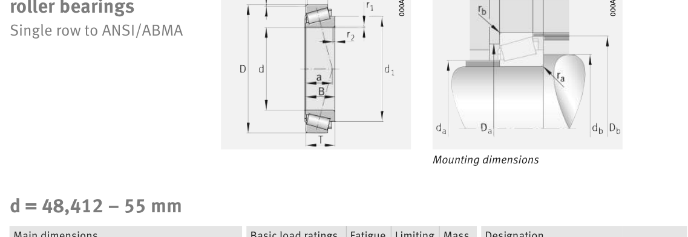

Original catalogue drawing - FAG Schaeffler HR 1, page 620

Scanned from the manufacturer catalogue page listing this part number. All part numbers printed on that table share the same drawing.
Scale cross-section
Blue = inner / outer ring, yellow = rolling element. Drawn to scale from this part's own
dimensions for selection reference only - not a manufacturing or assembly drawing.
Dimension table (mm / inch)
Symbol
Dimension
mm
inch
d
Bore diameter
55
2.1654
D
Outside diameter
96.838
3.8125
B
Inner-ring / bearing width
21.946
0.864
T
Overall assembly width
21
0.8268
C
Cup / outer-ring width
15.875
0.625
Notes
Weights are given in kg. Load ratings are shown in both the original catalogue units and the converted value (1 N = 0.2248 lbf). Data is provided for selection reference only - confirm against the latest official catalogue before ordering.
Main dimensions
Bore d (mm)
55
Outside dia. D (mm)
96.838
Width B (mm)
21.946
Overall width T (mm)
21
Cup width C (mm)
15.875
Inner-ring OD d1 (mm)
75.7
Load ratings & speeds
Basic dynamic load rating Cr (lbs)
17085
Basic static load rating Cor (lbs)
21357
Basic dynamic load rating Cr (N)
76000
Basic static load rating C0r (N)
95000
Basic dynamic axial rating Ca (N)
5.5
Fatigue limit load Cur (N)
11200
Factor e
0.35
Factor Y
1.69
Factor Y0
0.93
Limiting speed nG (rpm)
7,500
Effective load centre a (mm)
19
Weight
Weight (kg)
0.63
Mounting dimensions (fillets / shoulders)
Chamfer r2 min (mm)
3.5
Shaft shoulder da (mm)
61
Shaft shoulder db (mm)
67
Housing shoulder Da (mm)
89
Housing shoulder Db (mm)
92
Housing fillet ra max (mm)
3.5
Fillet rb max (mm)
0.8
Bearing life (ISO 281 basic rating life)
C / P
Equivalent load P (N)
L10 (106 rev)
L10h at 2,500 rpm
4
19,000
102
677
6
12,667
392
2,617
8
9,500
1,024
6,827
10
7,600
2,154
14,363
15
5,067
8,323
55,490
Basic rating life per ISO 281: L10 = (C/P)10/3 with C = 76,000 N. Hours = L10 x 106 / (60n). Life-modification factors for lubrication, contamination and temperature (aISO) are not included.
Source & traceability
Brand
FAG
Source catalogue
FAG / Schaeffler Rolling Bearings HR 1
Catalogue page
p.620 (dimensions)
Load ratings in newtons, fatigue limit load Cur, limiting speed nG and reference speed nB.
Send us the quantity you need and we will come back with price and
lead time, normally within 24 hours. Equivalent parts from other brands can be quoted at the same time.